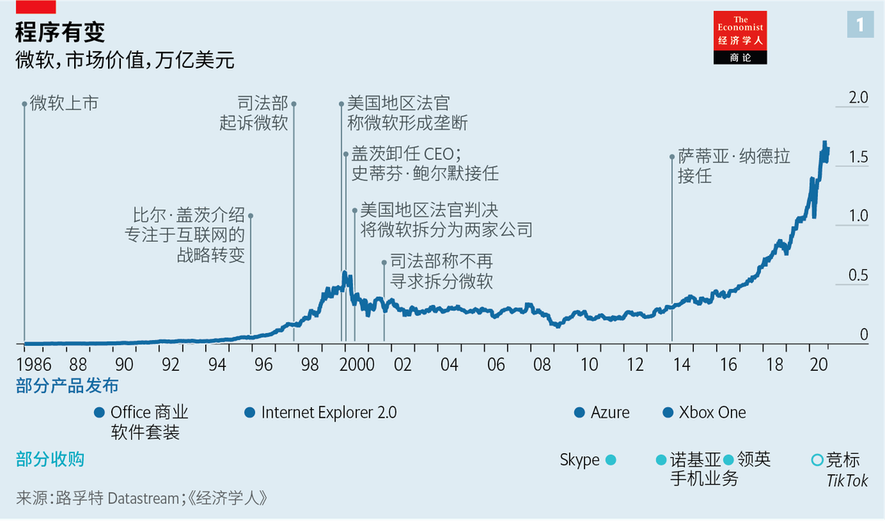
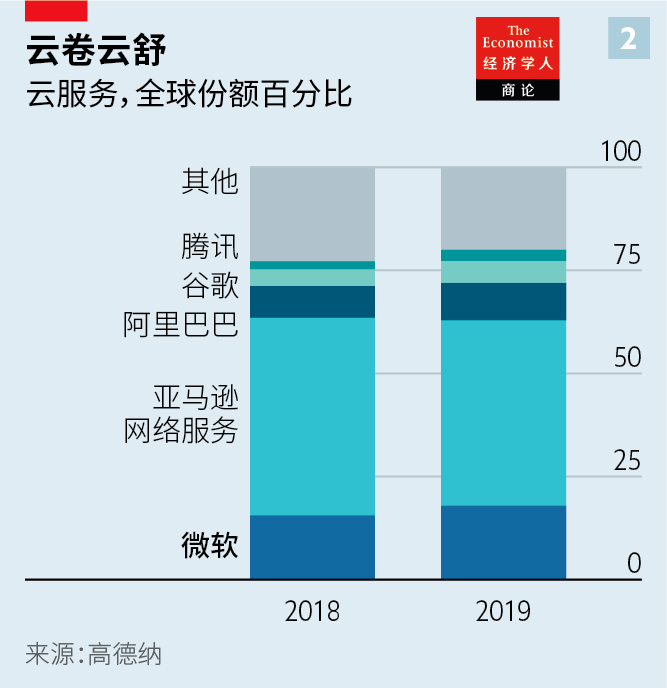
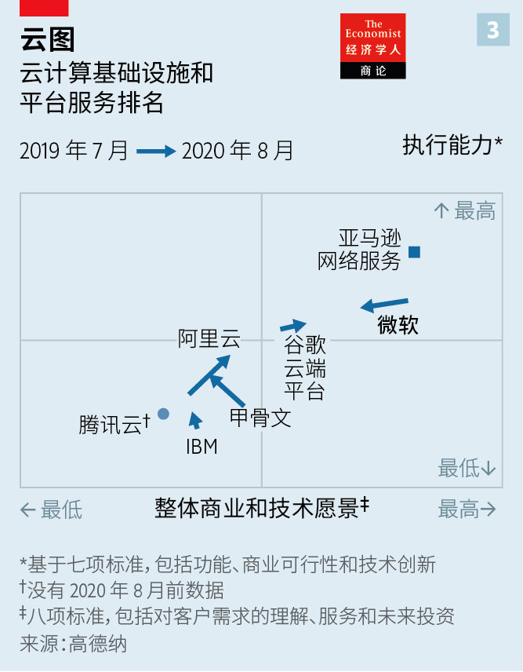
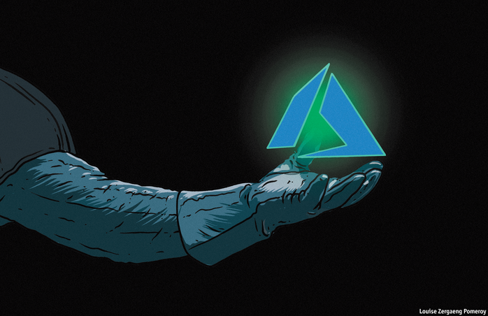
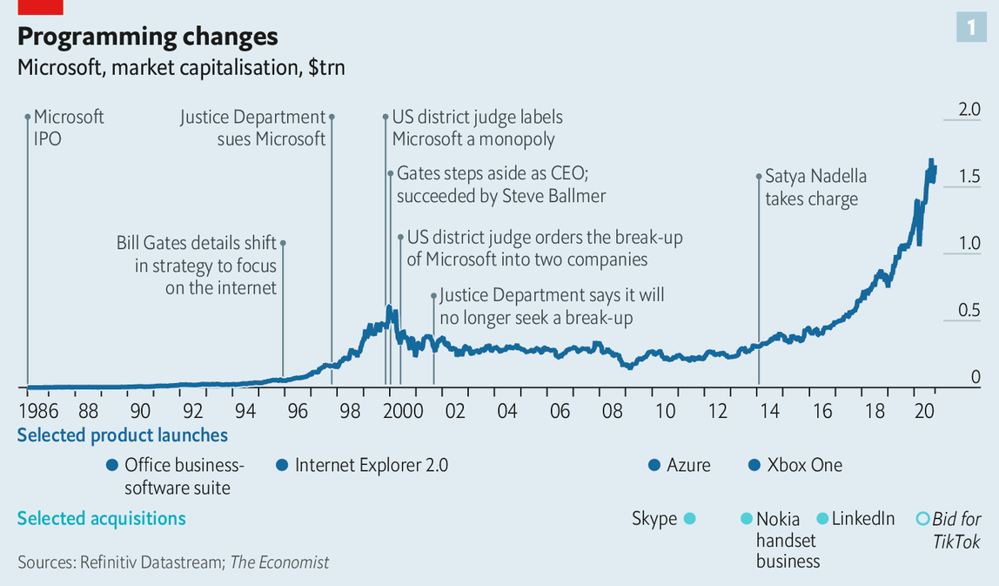
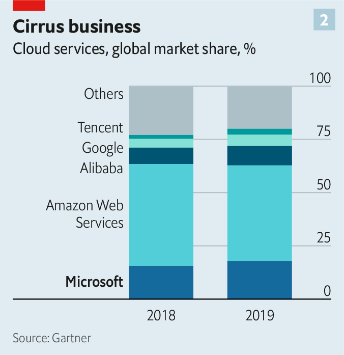
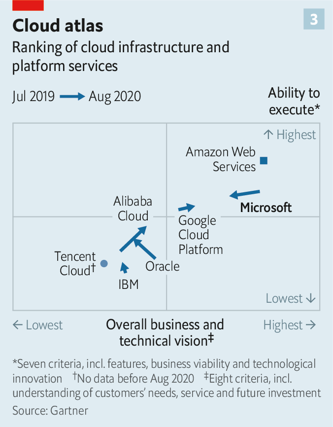

2020-11-30T17:31:27+00:00
微软
重启之后
这家软件巨头已经扭转了局面。现在困难才开始
当萨蒂亚·纳德拉（Satya Nadella）在2014年成为微软的第三任老板时，一张照片生动展现了那个时刻。站在他两边的分别是联合创始人兼董事长比尔·盖茨，和继盖茨之后担任首席执行官的史蒂夫·鲍尔默（Steve Ballmer）。两位白人技术大亨穿着休闲服摆出自信的姿势。印度裔美国人纳德拉则套着西装，局促地笑着。
他尴尬的笑容是有原因的。公司陷入困境。当它踞守在华盛顿州雷德蒙德的总部时，苹果发明了iPhone，谷歌和Facebook在硅谷崛起。公司股价几年来几乎没有动静。纳德拉说，当他接任时，外界质疑微软是否能“翻身”。
它做到了——云淡风轻地。纳德拉将Windows操作系统拉下了公司核心产品的宝座。他把微软的软件和服务引入了其他操作系统，包括开源的Linux以及谷歌和苹果的操作系统。最重要的是，他将2010年成立的微软云计算部门Azure置于业务的核心。其结果是两位数的收入增长和1.6万亿美元的市值。只有苹果和石油巨头沙特阿美的市值高过它。
微软的重塑成功了，而其他寻求第二春的科技公司——如IBM和甲骨文——都没能做到。但是，在瞬息万变的技术世界中，没有什么是永恒的。旧的个人计算机（PC）业务已经放缓。微软的产品并不总是最好或最受欢迎的。许多专家认为Azure在技术上落后于市场领先者亚马逊网络服务（AWS），后者是这个电子商务巨头在四年前推出的。许多用户更喜欢在Zoom上打视频电话，在Slack上聊天，而不是使用微软的Teams。今年，微软没能收购TikTok，而这原本可能促进其面向消费者的业务，包括Xbox游戏机和（TikTok用户没那么感兴趣的）职业人脉网络领英；这个广受欢迎的中资短视频应用改为与甲骨文建立了模糊的技术合作伙伴关系。而且，微软要抗衡的不仅是亚马逊，还有更年轻的科技巨头，例如谷歌的母公司Alphabet，以及中国的阿里巴巴和腾讯。
要取得成功的压力巨大。自纳德拉接任以来，微软的股价已上涨了四倍多（见图1）。现在的市盈率为37倍，高于Alphabet、苹果或Facebook（尽管远低于亚马逊的123倍）。研究公司伯恩斯坦（Bernstein）的马克·莫德勒（Mark Moerdler）说，该公司的定价要求的是完美，以及进一步扩张。
纳德拉承认这种挑战。“这不是某种线性渐移，”他说，“当第一个L形平台期到来时，问题是：你还有别的东西吗？”为了配得上市场的炒作，他正在把昔日武器（捆绑和许可）重新搬出来——1990年代后期，微软激进地使用这种武器，惹上了反托拉斯当局的麻烦，并因此赢得了“邪恶帝国”的绰号。作为一个1992年就进入微软的内部人士，他还记得那些日子，当时公司勉强躲过了强迫拆分。微软还能继续增长而不落入旧陷阱吗？
在2014年之前，微软拥有五个不同的业务领域。大部分利润来自以下三个：Windows、Office软件（电子表格、文字处理、PowerPoint等），以及在数据中心和企业网络的服务器上运行的程序。娱乐和设备（包括Xbox）赚了一点点。诸如必应搜索引擎和MSN网络门户之类的在线服务没赚到钱。
纳德拉重新配置了这个结构。如今，微软的20多个业务可分为三大类：云、生产力软件和业务流程，以及个人计算。每个类别都有一个利润丰厚的支柱——服务器、Office和Windows——再加上Surface PC和数字白板或Dynamics商业软件等许多其他拳头产品。许多业务围绕Azure展开，它已成长为微软应用程序的内部计算骨干，也是可以向客户销售的产品。对未来主义的量子计算或虚拟现实和增强现实的尝试自成一家，同时也增强了Azure的功能。利用必应、领英和来自其他地方的数据训练的人工智能（AI）算法也是如此。
如果在那些新奇技术上的押注有任何一项大获成功，就可以把微软的创新刀刃磨得更锋利——它目前似乎比亚马逊或Alphabet的更钝一点。即使没有，微软或许也能通过商业化产品而不是发明新产品来取得成功。正如一些内部人士打趣说，微软从来都不是第一个把产品推向市场的公司，通常也不是第二个，但是，“哇，我们会把所有的钱赚到手”。
就Office而言确实是这样。Excel不是第一个电子表格（还记得Lotus 1-2-3吗？），但它被许多软件工程师视为有史以来编写的最重要的程序，部分原因是它被应用得如此广泛。大约有12亿员工使用Office或Office365（通过Azure提供的网络版本）。在这一块，微软也落后于谷歌的G-suite软件，后者的新鲜功能包括可让多个用户同时处理一个文档。谷歌员工挖苦说微软是离线的“另存为”思维方式。
不过，经理们若非要把Office尤其是Excel从办公室员工手里夺走是要冒风险的。所以，据研究公司高德纳调查，微软控制了这类软件市场的87.6%，而谷歌占11.5%。为了推广Teams，微软已经开始免费将它与Office365捆绑在一起。到今年4月，Teams的每日用户达到7500万。竞争对手说这是不公平的。7月，Slack对微软发起了反托拉斯诉讼，它说Teams是山寨货，要把Slack置于死地——就像微软的Internet Explorer打垮了浏览器竞争对手网景一样，在当时引发了微软与反托拉斯检察官的斗争。
至关重要的是，微软在云计算领域是一个行动超快的追随者。在纳德拉关于公司转型的书《刷新》（Hit Refresh）中，他描述了在他接手公司时，AWS已经在没有竞争的情况下建立起庞大的云业务。他写道：“亚马逊当时在领导一场革命，而我们甚至还没有把部队召集起来。”
赌注很大。随着时间的推移，世界上大多数公司应该都会将计算转移到云中。云计算占IT支出的份额正逼近10%，但这意味着市场规模已经达到了每年2400亿美元。考虑到预期的近20%的年增长率，它很快就会达到1万亿美元。
在云上，Azure面对两大主要对手——AWS和谷歌云端平台（GCP），此外还有甲骨文和阿里云。其市场份额稳步上升，达到18%（见图2）。微软与企业IT部门良好的关系又帮了它一次。它仍然主宰着商业软件的若干领域，有五分之四的个人计算机上跑着Windows，在服务器中的比例则是72%。它可以为企业客户提供把Azure与Office等软件捆绑在一起的打包价。这样一来，Azure最终的价格仅为AWS的五分之一。而且它比Amazon的产品更易于使用，后者的高级功能甚至让某些IT专业人员都应接不暇。
对于许多客户来说，微软的产品也比亚马逊的要容易接受。一位微软前高管回忆说，当微软推销业务时，Azure会输掉技术评估，但却会因客户的恐惧而胜出——他们担心亚马逊永不满足的老板杰夫·贝索斯可能会拿着他们的钱和数据入侵他们的地盘。对贝索斯的疑虑可能解释了为什么尽管AWS被看好，却最终让微软拿走了五角大楼价值100亿美元的云合同。亚马逊认为，微软受益于特朗普与贝索斯之间的夙怨，因为贝索斯拥有总统不喜欢的《华盛顿邮报》。亚马逊在法律上质疑这个合同的归属，但迄今尚未成功。
Azure的目标是在云服务上能和AWS匹敌或超越它。然而，在高德纳密切关注的云供应商排名中，Azure远远落后于AWS，并且最近还下滑了（见图3）。微软在全球的云基础架构比AWS覆盖更多地理区域，但摊得更薄，这可能让它不那么可靠。高德纳指出它冗余能力不足，在数据中心因恶劣天气或其他问题出故障时会难以应付。即使没有发生这类中断，容量也已显现出不足。疫情期间数百万远程工作者切换到云，需求激增之下Azure有时无法满足。微软Teams在3月停机了一次。当月，微软对新的Azure订阅实施了临时资源限制。AWS不需要这么做。
天蓝色忧伤
在Azure上失误是微软不能承受的。Azure是公司股价的驱动因素。据估计，Azure仅占微软530亿美元年营业利润的十分之一。但是，投资银行高盛的希瑟·贝利尼（Heather Bellini）指出，华尔街每季度都会关注Azure的增长速度。最近，分析师对增长放缓感到失望，它从2020年前三个月同比增长59%放缓到4月至6月的47%。（令人稍感安慰的是，AWS的增长在最近几个季度也有所放缓。）
就像Teams的捆绑销售一样，Azure一定会从新的许可规则中受益匪浅。到目前为止，微软允许客户按照“自带许可证”（BYOL）的惯例，在由AWS或任何云供应商运行的专属服务器上使用其软件。这种自由使切换变得容易。在所有云基Windows软件中，有57%在AWS上运行，几乎是Azure的两倍。
去年夏天，微软取消了BYOL，并对希望将其软件安装在某些大型云上的客户施加了限制。去年10月1日之后，如果客户想在这些云上运行桌面和服务器程序，就必须购买新的订阅，而不是一次性许可证。为了不违反反托拉斯规则，微软将Azure与AWS、GCP和阿里云放在了同一张列表上。但是，它单独为客户提供了更好的优惠来迁移到Azure，从而抵消了额外的费用。
亚马逊表示，微软试图限制云公司可以使用的东西。几位中立的观察者认同这种说法。高德纳的主要云基础架构专家和云排名的作者拉杰·巴拉（Raj Bala）说：“微软正在利用它安装基础庞大的Windows Server武器库来惩罚竞争对手。”研究公司“微软方向”（Directions on Microsoft）的韦斯·米勒（Wes Miller）补充说，这与纳德拉更加开放的战略背道而驰。毕竟，他放宽了Office向非Windows设备（如苹果的iPad）的迁移。“萨蒂亚想让人们认为他不同以往，但他是老派微软人，只是外表略软一些。”竞争对手的一位高管总结道。
微软是唯一一家同时也出售许多云上托管的软件的大型云供应商。“亚马逊或者谷歌有没有一个软件可以在Azure上运行呢？零。”纳德拉说。这也给Azure带来了很大的可利用的优势。纳德拉不想再犯早先发生的那种错误，即让Windows工作负载全部迁移到亚马逊的云中。“我们那会儿很愚蠢，没有意识到发生了什么，” 他说，“我们绝对会把我们在他们云上的知识产权变现。”
自许可更改生效以来，高德纳已收到数百项有关这些问题的咨询。一家选择了AWS提供云服务的《财富》500强医疗保健公司的高管表示，新规定意味着每年需要额外支付1亿美元，这迫使该公司放慢了向云计算的转移。“他们写许可条款的方式就是让客户相信自己唯一的选择就是Azure，”威斯康星州一家感到被迫要离开AWS的中型公司的副总裁抱怨说，“它没有违法，但它拿走了选择。”另一家中西部公司的IT主管将新规定比作长期租车，但“出租方说你只能用雪佛龙汽油，而不能用BP或埃克森美孚的油”。这三位客户中的两位已决定逐渐把微软产品从其软件栈中撤出。
避免被抛出窗外
这给这家科技巨头带来了风险。过分激进地将不情不愿的客户拖到Azure上可能会导致许多客户弃用Windows，或者可能激起大批客户无视规则，就看这位软件巨人敢不敢去执行了。微软商业业务的首席营销官沼本健（Takeshi Numoto）表示，在新规则生效后，微软在云选择方面收到的反馈意见是积极的，并补充说：“我们希望听取所有客户的意见，看看是否有办法改善我们的合作伙伴关系并支持它们的业务。”
对于1990年代后期让它惹上麻烦的那种行为，微软试探得有多深呢？在那样头破血流的反托拉斯战役之后，它很可能会谨慎行事。如果欧洲对Slack表示同情，那么这家即时通讯软件公司可能会在美国提起类似诉讼。如果发生这种情况，微软可能会做出让步来避免麻烦。
纳德拉不同意微软已经过了线的看法。“看看企业SAAS（软件即服务）和基础设施公司的数量，”他说，这很难表明出现了“一家收取垄断租金的垄断公司”。
微软当然可以辩护说，Azure为云计算带来了竞争，否则这个领域可能被AWS垄断了。颇能说明问题的是，纳德拉躲过了在国会反托拉斯委员会面前作证的屈辱，该委员会最近拷问了他的竞争对手Alphabet、亚马逊、苹果和Facebook。国会一份关于技术巨头主导数字领域的报告也没有指摘微软。美国的反垄断监管者倒是盯上了谷歌，后者否认有不法行为。
微软以250亿至300亿美元收购TikTok的尝试失败了，而这项交易本可能促进市场竞争。如果它成功拿下，将可以在短期内在数字广告方面向谷歌和Facebook发起挑战。TikTok在青少年用户上收集的大量数据将助力微软的AI——它要和美国和中国的所有大型科技竞争对手开发的算法竞争。微软斥资75亿美元收购了游戏开发商ZeniMax Media来巩固其蓬勃发展的云游戏平台，但这还是无法弥补未能收购TikTok的损失。
谷歌在反托拉斯方面麻烦上身可以带来些许安慰。这个案子可能会颠覆互联网搜索，这可以帮到必应。尽管必应的搜索质量与谷歌的差别不大，但它还只是一条小鱼。微软10月将其更名为“微软必应”，看起来可能是希望它的搜索引擎重整旗鼓。
纳德拉对未来的增长充满信心，他早年的局促早已被合理而坚定的自信所取代。他说：“我们很幸运能够从事科技行业，未来十年内，IT支出将从GDP的5%增长到10%。”但是，对那些IT资金的争夺异常激烈。微软的应对方式——在很大程度上依赖客户不“叛变”——短期内可能会奏效。但是，随着科技行业得益于充足的人才和海量的资本而加快变革步伐，客户可能重视创新超过对长期供应商的忠诚。一次成功的重塑很可能还不够。
2020-11-30T17:31:27+00:00
Microsoft
After the reboot
The software giant has turned itself around. Now for the hard part
WHEN SATYA NADELLA became the third boss of Microsoft in 2014 one photograph captured the moment. It shows him flanked by Bill Gates, the co-founder and chairman, and Steve Ballmer, Mr Gates’s successor as chief executive. The two white tech tycoons strike a confident pose in casual dress. Mr Nadella, an Indian-American, skulks in a suit, smiling awkwardly.
He had a reason for that awkward smile. The company was in a ditch. While it hunkered down at its headquarters in Redmond, Washington, Apple invented the iPhone, and Google and Facebook rose from Silicon Valley. Its share price barely budged for years. When he took over, says Mr Nadella, outsiders questioned if Microsoft will “make it to the other side”.
It did—with aplomb. Mr Nadella dethroned the Windows operating system as its core product. He brought Microsoft’s software and services to other operating systems, including “open source” Linux, as well as Google’s and Apple’s. Most important, he put Microsoft’s cloud-computing arm, Azure, launched in 2010, at the heart of the business. The result has been double-digit revenue growth and a market capitalisation of $1.6trn. Only Apple and Saudi Aramco, an oil colossus, are more valuable.
Microsoft succeeded in its reinvention where other tech firms seeking a second life, such as IBM and Oracle, have not. But nothing lasts for ever in the fast-changing world of technology. The old personal-computer (PC) business has slowed. The firm’s products are not always the best or most popular. Azure is considered by many experts to be technologically behind the market leader, Amazon Web Services (AWS), which the e-commerce giant launched four years earlier. Many users prefer to make video calls on Zoom and chat on Slack rather than use Microsoft’s Teams. This year Microsoft failed to buy TikTok, which might have boosted its consumer-facing business that includes the Xbox games console and (less interestingly for TikTokers) LinkedIn, a careers network; the popular Chinese-owned short-video app inked a nebulous technology partnership with Oracle instead. And Microsoft has to square up not just to Amazon but to younger tech giants such as Alphabet (Google’s parent) and China’s Alibaba and Tencent.
The pressure to succeed is immense. The firm’s shares have more than quintupled in value since Mr Nadella took over (see chart 1). They now trade at 37 times earnings, a higher multiple than those of Alphabet, Apple or Facebook (though far below Amazon’s ratio of 123). The company is priced for perfection, says Mark Moerdler of Bernstein, a research firm. And for further expansion.
Mr Nadella acknowledges the challenge. “This is not some linear transition,” he says. “When the first hockey stick plateaus the question is: have you got the other things?” In an effort to live up to the hype he is dusting off old weapons—bundling and licensing—the aggressive use of which got Microsoft in trouble with antitrust authorities from the late 1990s and earned it the moniker “evil empire”. An insider since 1992, he remembers those days, when the firm narrowly avoided a forced break-up. Can it continue to grow while steering clear of the old pitfalls?
Until 2014 Microsoft had five different business areas. Most of the profit came from three of them: Windows, its Office software (spreadsheets, word-processing, PowerPoint and the like) and programs to run the servers used in data centres and corporate networks. Entertainment and devices, including the Xbox, made a bit of money. Online services such as the Bing search engine and MSN web portal did not.
Mr Nadella reconfigured this structure. Today Microsoft’s 20 or so businesses fall into three big buckets: cloud, productivity software and business processes, and personal computing. Each contains one of the lucrative stalwarts—servers, Office and Windows—alongside lots of others such as Surface PCs and digital whiteboards, or Dynamics business software. Many of the businesses revolve around Azure, which has grown into the internal computing backbone for Microsoft’s applications, as well as a product to sell to customers. Forays into futuristic quantum computing or virtual and augmented reality stand on their own, while boosting Azure’s capabilities. So do artificial-intelligence (AI) algorithms, trained on data from Bing, LinkedIn and other places.
If any of those whizzy bets succeed at scale, they would sharpen Microsoft’s innovative edge, which looks blunter than either Amazon’s or Alphabet’s. Even if they do not, Microsoft may succeed by commercialising products rather than inventing new ones. As insiders quip, the firm is never first to market and often not second, but “man, we will make all the money”.
That has certainly been true of Office. Excel was not the first spreadsheet (remember Lotus 1-2-3?). But it is deemed by many software engineers to be the most consequential program ever written, in part because it has been so widely adopted. Around 1.2bn workers use Office or Office365, a web-based version served up through Azure. Here, too, Microsoft lagged behind Google’s G-suite software, which, among other things, enabled multiple users to work on one document at the same time. Googlers make digs at what they see as Microsoft’s offline, “save as” mentality.
Still, managers prise Office—and especially Excel—from desk-jockeys at their peril. As a result, Microsoft controls 87.6% of the market for such software, to Google’s 11.5%, according to Gartner, a research firm. To boost Teams, Microsoft has started bundling it with Office365 free of charge; by April Teams had 75m daily users. Unfair, rivals say; in July Slack launched an antitrust suit against Microsoft. It calls Teams a copycat product aimed at killing it—just as Microsoft’s Internet Explorer vanquished Netscape, a rival web browser, which led to its battle with trustbusters.
Critically, Microsoft has been a superfast follower in the cloud. In Mr Nadella’s book about the firm’s transformation, “Hit Refresh”, he described how, by the time he took over, AWS had built a vast cloud business with no competition. “Amazon was leading a revolution and we had not even mustered our troops,” he wrote.
The stakes are huge. Over time most of the world’s companies are expected to move computing to the cloud. The share of IT spending going to the cloud is approaching 10%. But that already amounts to an annual market of $240bn. Given expected annual growth rates of nearly 20% it could reach $1trn before long.
In the cloud Azure faces two big rivals—AWS and Google Cloud Platform (GCP)—and two others—Oracle and Alibaba Cloud. Its market share has risen steadily, to 18% (see chart 2). Again, Microsoft’s rapport with firms’IT departments has served it well. It still dominates parts of business software and nearly four in five personal computers run on Windows, as do 72% of all servers. It can offer corporate clients a single price that bundles Azure with Office and other software. That way Azure can end up costing only a fifth as much as AWS. And it is easier to use than Amazon’s offering, whose advanced features overwhelm even some IT professionals.
It is also easier to swallow for many clients than Amazon products. When Microsoft pitched for business, recalls a former executive, Azure would lose the technical evaluation but win out of customers’ fear that Jeff Bezos, Amazon’s insatiable boss, might use their money and data to invade their turf. Suspicion of Mr Bezos may explain why AWS lost a $10bn Pentagon cloud contract to Microsoft, despite being tipped to win. Amazon believes Microsoft benefited from Donald Trump’s feud with Mr Bezos, who also owns the
Azure aims to match or overtake AWS in the cloud. Yet in Gartner’s closely followed ranking of cloud providers Azure comes in well behind AWS and has lately slipped down (see chart 3). The way Microsoft has built its global cloud infrastructure, covering more geographical ground than AWS but more thinly, may make it less reliable. Gartner cites insufficient redundant capacity to deal with data centres knocked out by bad weather or other problems. Even without disruptions, capacity has proved problematic. As demand has surged in the pandemic, with millions of remote workers switching to the cloud, Azure has at times been unable to keep up. Microsoft Teams suffered a blackout in March. That month Microsoft put in place temporary resource limits on new Azure subscriptions. AWS has not needed to.
Azure blues
Microsoft cannot afford to get Azure wrong. It is what drives its share price. Azure is estimated to make up only a tenth of Microsoft’s $53bn in annual operating profit. But every quarter Wall Street fixates on how fast the cloud is growing, notes Heather Bellini of Goldman Sachs, an investment bank. Recently analysts have been disappointed to see growth slow, from 59% year on year in the first three months of 2020, to 47% from April to June. (It is some comfort that AWS’s growth has also slowed in recent quarters.)
Azure is sure to get a fillip from new licensing rules, just as Teams has from bundling. Up to now Microsoft let customers use its software on dedicated servers run by AWS or any cloud provider under a practice called “bring your own licence” (BYOL). That freedom enabled easy switching; of all cloud-based Windows software, 57% runs on AWS, nearly twice as much as on Azure.
Last summer Microsoft did away with BYOL and introduced restrictions for customers wishing to put its software on certain big clouds. If a client wanted to run desktop and server programs on those clouds after October 1st, it would have to buy a new subscription, rather than a one-off licence. Not to offend antitrust rules Microsoft put Azure on its list alongside AWS, GCP and Alibaba Cloud. But it separately offered customers a better deal to move to Azure, offsetting the extra cost.
Amazon said Microsoft was trying to restrict what clouds companies can use. Several neutral observers concur. “Microsoft is taking its arsenal of Windows Server, a massive installed software base, and using it punitively against competitors,” says Raj Bala, Gartner’s main cloud-infrastructure expert and author of its cloud ranking. It is the antithesis of Mr Nadella’s more open strategy, adds Wes Miller of Directions on Microsoft, a research firm. After all, he had eased Office’s move to non-Windows devices such as Apple’s iPad. “Satya wants to make people think he’s different, but he’s old-school Microsoft, just with a little softer exterior,” sums up an executive at a rival.
Microsoft is the only big cloud provider which also sells lots of programs that clouds host. “Is there a piece of software that Amazon or Google has built that runs on Azure? Zero,” Mr Nadella says. That also gives Azure a big advantage to exploit. Mr Nadella does not intend to repeat the mistake of letting Windows workloads all migrate to Amazon’s cloud, as happened early on. “We were stupid, not realising what was happening,” he says. “We will absolutely monetise our intellectual property on their clouds.”
Since the licensing changes went into effect Gartner has received several hundred inquiries about them. An executive from a
Avoiding defenestration
That points to a risk for the tech giant. By tugging reluctant customers onto Azure too aggressively Microsoft may put a lot of them off Windows—or, possibly, provoke mass flouting of rules, daring the software giant to enforce them. Takeshi Numoto, chief marketing officer of Microsoft’s commercial business, says the feedback Microsoft is receiving on cloud choice after the new rules is positive, adding that “We want to hear from all customers if there are ways we can improve our partnership and support of their businesses.”
How closely is Microsoft flirting with the kind of behaviour that got it in trouble in the late 1990s? After its bruising antitrust battle it is likely to proceed cautiously. If Europe proves sympathetic to Slack, the messaging firm could bring a similar case in America. If that happens, Microsoft may offer concessions to make it go away.
Mr Nadella resists the idea that Microsoft is overstepping the mark. “Look at the number of enterprise SAAS [software-as-a-service] and infrastructure firms,” he says—hardly suggestive of “a monopoly company collecting monopoly rent”.
In its defence Microsoft can certainly argue that Azure has brought competition to cloud computing, which AWS might otherwise have cornered. Tellingly, Mr Nadella was spared the indignity of testifying in front of a congressional antitrust subcommittee, which recently grilled his opposite numbers at Alphabet, Amazon, Apple and Facebook. A congressional report on big tech’s digital dominance did not finger Microsoft. America’s trustbusters have gone after Google instead. Google denies wrongdoing.
Microsoft’s rebuffed $25bn-30bn bid for TikTok could have been a boon to competition. Had it succeeded, Microsoft would have challenged Google and Facebook in digital advertising in short order. TikTok’s reams of data on its teenage users would have fuelled Microsoft’s AI, which competes against algorithms being developed by all its big tech rivals in America and China. The purchase of ZeniMax Media, a games developer, for $7.5bn to bolster its flourishing cloud-gaming platform does not make up for the failed bid.
Google’s antitrust troubles could offer consolation. The case may shake up internet search, helping Bing. It is a tiddler despite having a quality of search results that is not all that different from Google’s. In a hint that Microsoft might want to revive its search engine, in October it was rebranded as “Microsoft Bing”.
Mr Nadella is confident about future growth, his early awkwardness long since replaced by a justified and resolute assuredness. “We’re lucky enough to be in the tech business, and IT spending is going from 5% of GDP to 10% over the next ten years,” he says. But competition for those IT dollars is white-hot. Microsoft’s response—leaning heavily on customers not to defect—may work in the short run. But as the pace of change in the technology industry accelerates, thanks to abundant brainpower and oodles of capital, customers may put innovation ahead of loyalty to long-standing providers. One successful reinvention is unlikely to be enough. ■
2020-11-30T17:31:27+00:00
微軟
重啟之後
這家軟件巨頭已經扭轉了局面。現在困難才開始
當薩蒂亞·納德拉（Satya Nadella）在2014年成為微軟的第三任老闆時，一張照片生動展現了那個時刻。站在他兩邊的分別是聯合創始人兼董事長比爾·蓋茨，和繼蓋茨之後擔任首席執行官的史蒂夫·鮑爾默（Steve Ballmer）。兩位白人技術大亨穿着休閑服擺出自信的姿勢。印度裔美國人納德拉則套着西裝，局促地笑着。
他尷尬的笑容是有原因的。公司陷入困境。當它踞守在華盛頓州雷德蒙德的總部時，蘋果發明了iPhone，谷歌和Facebook在硅谷崛起。公司股價幾年來幾乎沒有動靜。納德拉說，當他接任時，外界質疑微軟是否能“翻身”。
它做到了——雲淡風輕地。納德拉將Windows操作系統拉下了公司核心產品的寶座。他把微軟的軟件和服務引入了其他操作系統，包括開源的Linux以及谷歌和蘋果的操作系統。最重要的是，他將2010年成立的微軟雲計算部門Azure置於業務的核心。其結果是兩位數的收入增長和1.6萬億美元的市值。只有蘋果和石油巨頭沙特阿美的市值高過它。
微軟的重塑成功了，而其他尋求第二春的科技公司——如IBM和甲骨文——都沒能做到。但是，在瞬息萬變的技術世界中，沒有什麼是永恆的。舊的個人計算機（PC）業務已經放緩。微軟的產品並不總是最好或最受歡迎的。許多專家認為Azure在技術上落後於市場領先者亞馬遜網絡服務（AWS），後者是這個電子商務巨頭在四年前推出的。許多用戶更喜歡在Zoom上打視頻電話，在Slack上聊天，而不是使用微軟的Teams。今年，微軟沒能收購TikTok，而這原本可能促進其面向消費者的業務，包括Xbox遊戲機和（TikTok用戶沒那麼感興趣的）職業人脈網絡領英；這個廣受歡迎的中資短視頻應用改為與甲骨文建立了模糊的技術合作夥伴關係。而且，微軟要抗衡的不僅是亞馬遜，還有更年輕的科技巨頭，例如谷歌的母公司Alphabet，以及中國的阿里巴巴和騰訊。
要取得成功的壓力巨大。自納德拉接任以來，微軟的股價已上漲了四倍多（見圖1）。現在的市盈率為37倍，高於Alphabet、蘋果或Facebook（儘管遠低於亞馬遜的123倍）。研究公司伯恩斯坦（Bernstein）的馬克·莫德勒（Mark Moerdler）說，該公司的定價要求的是完美，以及進一步擴張。
納德拉承認這種挑戰。“這不是某種線性漸移，”他說，“當第一個L形平台期到來時，問題是：你還有別的東西嗎？”為了配得上市場的炒作，他正在把昔日武器（捆綁和許可）重新搬出來——1990年代後期，微軟激進地使用這種武器，惹上了反托拉斯當局的麻煩，並因此贏得了“邪惡帝國”的綽號。作為一個1992年就進入微軟的內部人士，他還記得那些日子，當時公司勉強躲過了強迫拆分。微軟還能繼續增長而不落入舊陷阱嗎？
在2014年之前，微軟擁有五個不同的業務領域。大部分利潤來自以下三個：Windows、Office軟件（電子表格、文字處理、PowerPoint等），以及在數據中心和企業網絡的服務器上運行的程序。娛樂和設備（包括Xbox）賺了一點點。諸如必應搜索引擎和MSN網絡門戶之類的在線服務沒賺到錢。
納德拉重新配置了這個結構。如今，微軟的20多個業務可分為三大類：雲、生產力軟件和業務流程，以及個人計算。每個類別都有一個利潤豐厚的支柱——服務器、Office和Windows——再加上Surface PC和數字白板或Dynamics商業軟件等許多其他拳頭產品。許多業務圍繞Azure展開，它已成長為微軟應用程序的內部計算骨幹，也是可以向客戶銷售的產品。對未來主義的量子計算或虛擬現實和增強現實的嘗試自成一家，同時也增強了Azure的功能。利用必應、領英和來自其他地方的數據訓練的人工智能（AI）算法也是如此。
如果在那些新奇技術上的押注有任何一項大獲成功，就可以把微軟的創新刀刃磨得更鋒利——它目前似乎比亞馬遜或Alphabet的更鈍一點。即使沒有，微軟或許也能通過商業化產品而不是發明新產品來取得成功。正如一些內部人士打趣說，微軟從來都不是第一個把產品推向市場的公司，通常也不是第二個，但是，“哇，我們會把所有的錢賺到手”。
就Office而言確實是這樣。Excel不是第一個電子表格（還記得Lotus 1-2-3嗎？），但它被許多軟件工程師視為有史以來編寫的最重要的程序，部分原因是它被應用得如此廣泛。大約有12億員工使用Office或Office365（通過Azure提供的網絡版本）。在這一塊，微軟也落後於谷歌的G-suite軟件，後者的新鮮功能包括可讓多個用戶同時處理一個文檔。谷歌員工挖苦說微軟是離線的“另存為”思維方式。
不過，經理們若非要把Office尤其是Excel從辦公室員工手裡奪走是要冒風險的。所以，據研究公司高德納調查，微軟控制了這類軟件市場的87.6%，而谷歌佔11.5%。為了推廣Teams，微軟已經開始免費將它與Office365捆綁在一起。到今年4月，Teams的每日用戶達到7500萬。競爭對手說這是不公平的。7月，Slack對微軟發起了反托拉斯訴訟，它說Teams是山寨貨，要把Slack置於死地——就像微軟的Internet Explorer打垮了瀏覽器競爭對手網景一樣，在當時引發了微軟與反托拉斯檢察官的鬥爭。
至關重要的是，微軟在雲計算領域是一個行動超快的追隨者。在納德拉關於公司轉型的書《刷新》（Hit Refresh）中，他描述了在他接手公司時，AWS已經在沒有競爭的情況下建立起龐大的雲業務。他寫道：“亞馬遜當時在領導一場革命，而我們甚至還沒有把部隊召集起來。”
賭注很大。隨着時間的推移，世界上大多數公司應該都會將計算轉移到雲中。雲計算佔IT支出的份額正逼近10%，但這意味着市場規模已經達到了每年2400億美元。考慮到預期的近20%的年增長率，它很快就會達到1萬億美元。
在雲上，Azure面對兩大主要對手——AWS和谷歌雲端平台（GCP），此外還有甲骨文和阿里雲。其市場份額穩步上升，達到18%（見圖2）。微軟與企業IT部門良好的關係又幫了它一次。它仍然主宰着商業軟件的若干領域，有五分之四的個人計算機上跑着Windows，在服務器中的比例則是72%。它可以為企業客戶提供把Azure與Office等軟件捆綁在一起的打包價。這樣一來，Azure最終的價格僅為AWS的五分之一。而且它比Amazon的產品更易於使用，後者的高級功能甚至讓某些IT專業人員都應接不暇。
對於許多客戶來說，微軟的產品也比亞馬遜的要容易接受。一位微軟前高管回憶說，當微軟推銷業務時，Azure會輸掉技術評估，但卻會因客戶的恐懼而勝出——他們擔心亞馬遜永不滿足的老闆傑夫·貝索斯可能會拿着他們的錢和數據入侵他們的地盤。對貝索斯的疑慮可能解釋了為什麼儘管AWS被看好，卻最終讓微軟拿走了五角大樓價值100億美元的雲合同。亞馬遜認為，微軟受益於特朗普與貝索斯之間的夙怨，因為貝索斯擁有總統不喜歡的《華盛頓郵報》。亞馬遜在法律上質疑這個合同的歸屬，但迄今尚未成功。
Azure的目標是在雲服務上能和AWS匹敵或超越它。然而，在高德納密切關注的雲供應商排名中，Azure遠遠落後於AWS，並且最近還下滑了（見圖3）。微軟在全球的雲基礎架構比AWS覆蓋更多地理區域，但攤得更薄，這可能讓它不那麼可靠。高德納指出它冗餘能力不足，在數據中心因惡劣天氣或其他問題出故障時會難以應付。即使沒有發生這類中斷，容量也已顯現出不足。疫情期間數百萬遠程工作者切換到雲，需求激增之下Azure有時無法滿足。微軟Teams在3月停機了一次。當月，微軟對新的Azure訂閱實施了臨時資源限制。AWS不需要這麼做。
天藍色憂傷
在Azure上失誤是微軟不能承受的。Azure是公司股價的驅動因素。據估計，Azure僅占微軟530億美元年營業利潤的十分之一。但是，投資銀行高盛的希瑟·貝利尼（Heather Bellini）指出，華爾街每季度都會關注Azure的增長速度。最近，分析師對增長放緩感到失望，它從2020年前三個月同比增長59%放緩到4月至6月的47%。（令人稍感安慰的是，AWS的增長在最近幾個季度也有所放緩。）
就像Teams的捆綁銷售一樣，Azure一定會從新的許可規則中受益匪淺。到目前為止，微軟允許客戶按照“自帶許可證”（BYOL）的慣例，在由AWS或任何雲供應商運行的專屬服務器上使用其軟件。這種自由使切換變得容易。在所有雲基Windows軟件中，有57%在AWS上運行，幾乎是Azure的兩倍。
去年夏天，微軟取消了BYOL，並對希望將其軟件安裝在某些大型雲上的客戶施加了限制。去年10月1日之後，如果客戶想在這些雲上運行桌面和服務器程序，就必須購買新的訂閱，而不是一次性許可證。為了不違反反托拉斯規則，微軟將Azure與AWS、GCP和阿里雲放在了同一張列表上。但是，它單獨為客戶提供了更好的優惠來遷移到Azure，從而抵消了額外的費用。
亞馬遜表示，微軟試圖限制雲公司可以使用的東西。幾位中立的觀察者認同這種說法。高德納的主要雲基礎架構專家和雲排名的作者拉傑·巴拉（Raj Bala）說：“微軟正在利用它安裝基礎龐大的Windows Server武器庫來懲罰競爭對手。”研究公司“微軟方向”（Directions on Microsoft）的韋斯·米勒（Wes Miller）補充說，這與納德拉更加開放的戰略背道而馳。畢竟，他放寬了Office向非Windows設備（如蘋果的iPad）的遷移。“薩蒂亞想讓人們認為他不同以往，但他是老派微軟人，只是外表略軟一些。”競爭對手的一位高管總結道。
微軟是唯一一家同時也出售許多雲上託管的軟件的大型雲供應商。“亞馬遜或者谷歌有沒有一個軟件可以在Azure上運行呢？零。”納德拉說。這也給Azure帶來了很大的可利用的優勢。納德拉不想再犯早先發生的那種錯誤，即讓Windows工作負載全部遷移到亞馬遜的雲中。“我們那會兒很愚蠢，沒有意識到發生了什麼，” 他說，“我們絕對會把我們在他們雲上的知識產權變現。”
自許可更改生效以來，高德納已收到數百項有關這些問題的諮詢。一家選擇了AWS提供雲服務的《財富》500強醫療保健公司的高管表示，新規定意味着每年需要額外支付1億美元，這迫使該公司放慢了向雲計算的轉移。“他們寫許可條款的方式就是讓客戶相信自己唯一的選擇就是Azure，”威斯康星州一家感到被迫要離開AWS的中型公司的副總裁抱怨說，“它沒有違法，但它拿走了選擇。”另一家中西部公司的IT主管將新規定比作長期租車，但“出租方說你只能用雪佛龍汽油，而不能用BP或埃克森美孚的油”。這三位客戶中的兩位已決定逐漸把微軟產品從其軟件棧中撤出。
避免被拋出窗外
這給這家科技巨頭帶來了風險。過分激進地將不情不願的客戶拖到Azure上可能會導致許多客戶棄用Windows，或者可能激起大批客戶無視規則，就看這位軟件巨人敢不敢去執行了。微軟商業業務的首席營銷官沼本健（Takeshi Numoto）表示，在新規則生效後，微軟在雲選擇方面收到的反饋意見是積極的，並補充說：“我們希望聽取所有客戶的意見，看看是否有辦法改善我們的合作夥伴關係並支持它們的業務。”
對於1990年代後期讓它惹上麻煩的那種行為，微軟試探得有多深呢？在那樣頭破血流的反托拉斯戰役之後，它很可能會謹慎行事。如果歐洲對Slack表示同情，那麼這家即時通訊軟件公司可能會在美國提起類似訴訟。如果發生這種情況，微軟可能會做出讓步來避免麻煩。
納德拉不同意微軟已經過了線的看法。“看看企業SAAS（軟件即服務）和基礎設施公司的數量，”他說，這很難表明出現了“一家收取壟斷租金的壟斷公司”。
微軟當然可以辯護說，Azure為雲計算帶來了競爭，否則這個領域可能被AWS壟斷了。頗能說明問題的是，納德拉躲過了在國會反托拉斯委員會面前作證的屈辱，該委員會最近拷問了他的競爭對手Alphabet、亞馬遜、蘋果和Facebook。國會一份關於技術巨頭主導數字領域的報告也沒有指摘微軟。美國的反壟斷監管者倒是盯上了谷歌，後者否認有不法行為。
微軟以250億至300億美元收購TikTok的嘗試失敗了，而這項交易本可能促進市場競爭。如果它成功拿下，將可以在短期內在數字廣告方面向谷歌和Facebook發起挑戰。TikTok在青少年用戶上收集的大量數據將助力微軟的AI——它要和美國和中國的所有大型科技競爭對手開發的算法競爭。微軟斥資75億美元收購了遊戲開發商ZeniMax Media來鞏固其蓬勃發展的雲遊戲平台，但這還是無法彌補未能收購TikTok的損失。
谷歌在反托拉斯方面麻煩上身可以帶來些許安慰。這個案子可能會顛覆互聯網搜索，這可以幫到必應。儘管必應的搜索質量與谷歌的差別不大，但它還只是一條小魚。微軟10月將其更名為“微軟必應”，看起來可能是希望它的搜索引擎重整旗鼓。
納德拉對未來的增長充滿信心，他早年的局促早已被合理而堅定的自信所取代。他說：“我們很幸運能夠從事科技行業，未來十年內，IT支出將從GDP的5%增長到10%。”但是，對那些IT資金的爭奪異常激烈。微軟的應對方式——在很大程度上依賴客戶不“叛變”——短期內可能會奏效。但是，隨着科技行業得益於充足的人才和海量的資本而加快變革步伐，客戶可能重視創新超過對長期供應商的忠誠。一次成功的重塑很可能還不夠。